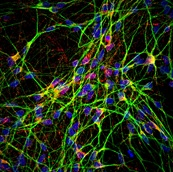
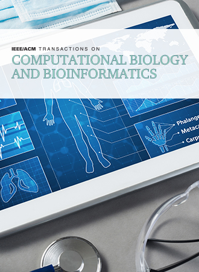
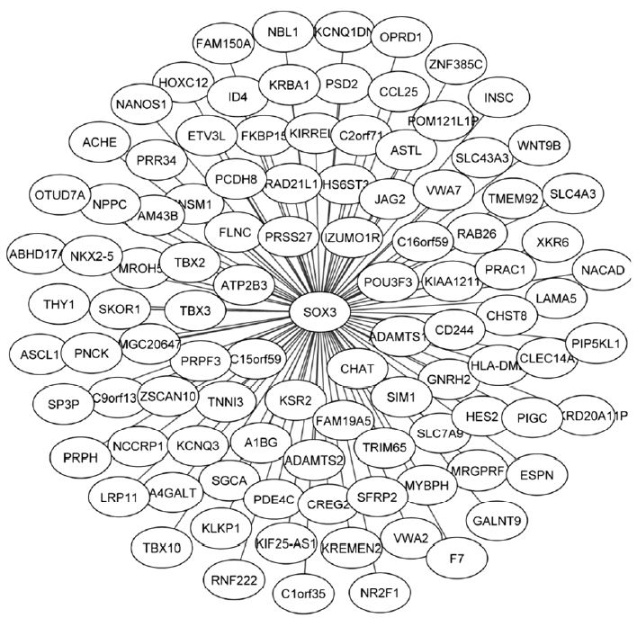
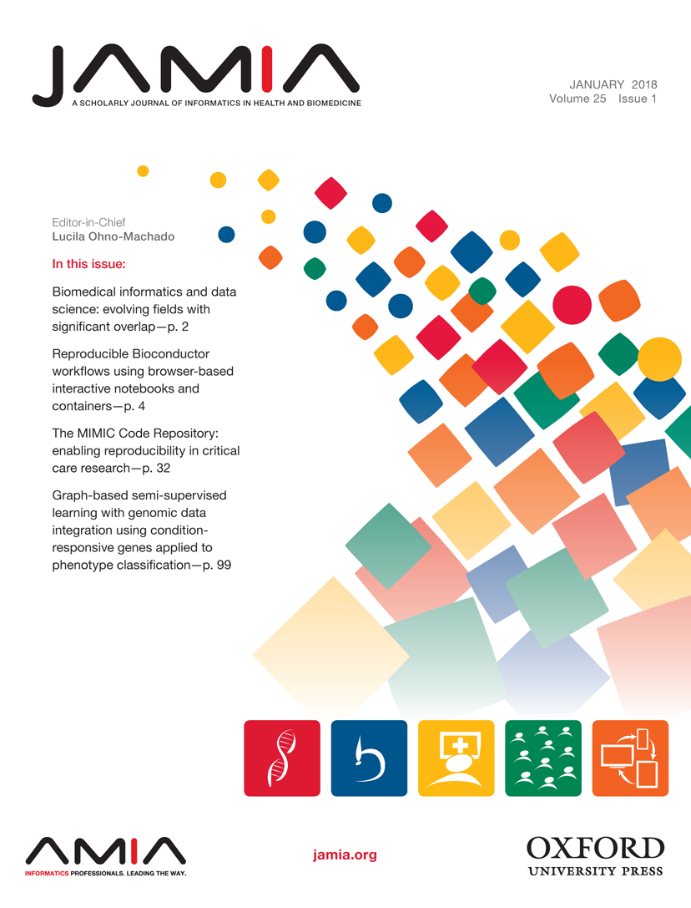
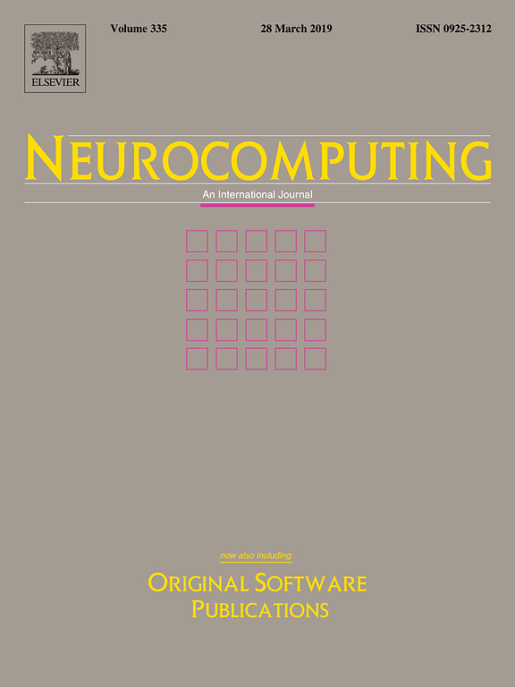

Publications
Here I have shortlisted my recent publications in chronological order. Full list is available on Google Scholar.
Select Publications
-

- A. Doostparast Torshizi, L. Petzold, M. Cohen, Direct higher order fuzzy rule-based classification system: Application in mortality prediction, 2015 IEEE International Conference on Bioinformatics and Biomedicine (IEEE-BIBM).
- A. Doostparast Torshizi, M. H. Fazel Zarandi, Alpha-plane based automatic general type-2 fuzzy clustering based on simulated annealing meta-heuristic algorithm for analyzing gene expression data, Computers in Biology and Medicine, vol. 64, no. 1, pp. 347-359, 2015.
- A. Doostparast Torshizi, M. H. Fazel Zarandi, H. Zakeri, On type-reduction of type-2 fuzzy sets: A review, Applied Soft Computing, vol. 27, pp. 614-627, 2015.
- A. Doostparast Torshizi, M. H. Fazel Zarandi, Hierarchical collapsing method for direct defuzzification of general type-2 fuzzy sets, Information Sciences, vol. 277, no. 1, pp. 842-861, 2014.
- A. Doostparast Torshizi, M. H. Fazel Zarandi, A new cluster validity measure based on general type-2 fuzzy sets: Application in gene expression data clustering, Knowldege-Based Systems, vol. 64, pp. 81-93, 2014.
- A. Doostparast Torshizi, M. H. Fazel Zarandi, G. Torshizi, K. Eghbali, A hybrid fuzzy-ontology based intelligent system to determine level of severity and treatment recommendation for Benign Prostatic Hyperplasia, Computer Methods and Programs in Biomedicine, vol. 113, no. 1 pp. 301-313, 2014.
A. Doostparast Torshizi, et al.,
Deconvolution of transcriptional networks identified TCF4 as a master regulator in schizophrenia, Science Advances, in revision (2019).A. Doostparast Torshizi, J. Duan, K. Wang,
Robust unsupervised single-cell RNA-Seq guided deconvolution of cellular composition from bulk RNA-Seq, Nucleic Acids Research, under review (2019).
A. Doostparast Torshizi, K. Wang,
Next-generation sequencing in drug development: target identification and genetically stratified clinical trials, Drug Discovery Today, vol. 23, no. 10, pp. 1776-1783, 2019.L. Shi, G. Huang, J. Zheng, A. Doostparast Torshizi, S. Gong, S. Kang, X. Ma, J. Yu, K. Wang,
Uncovering the functional link between SHANK3 deletions and deficiency in neurodevelopment using iPSC-derived human neurons , frontiers in Neuroanatomy, 2019.A. Doostparast Torshizi, J. Duan, K. Wang,
Transcriptional network analysis on brains reveals a potential regulatory role of PPP1R3F in autism spectrum disorders, BMC Research Notes, vol. 11, no. 489, 2018.
A. Doostparast Torshizi, L. Petzold,
Sparse Pathway-Induced Dynamic Network Biomarker Discovery for Early Warning Signal Detection in Complex Diseases, IEEE/ACM Transactions on Computational Biology and Bioinformatics, vol. 15, no. 3, pp. 1028-1034, 2018.
A. Doostparast Torshizi, K. Wang,
Deconvolution of Transcriptional Networks in Post-Traumatic Stress Disorder Uncovers Master Regulators Driving Innate Immune System Function, Scientific Reports, Nature Publishing Group, vol. 7, no. 14486, 2017.
A. Doostparast Torshizi, L. Petzold,
Graph-based semi-supervised learning with genomic data integration using condition-responsive genes applied to phenotype classification, Journal of the American Medical Informatics Association, vol. 25, no. 1, pp. 99-108, 2017 (Featured Article & Editor's Choice).
A. Doostparast Torshizi, M. Cohen, L. Petzold,
Multivariate soft repulsive system identification for constructing rule-based classification systems: Application to trauma clinical data, Neurocomputing, vol. 245, no. 5, pp. 77-85, 2017.News
I usually share my career-related news here.
News
- Mar. 2019: Our proposal "Genome-wide structural variation detection in acute lymphocytic leukemia using long-read sequencing technology" got funded through Roberts Rapid Grants at CHOP/Penn.
- Feb. 2019: Our collaborative research investigating the functional impact of SHANK3 deletions on autism spectrum disorders using human induced pluripotent stem cell (hiPSC)-derived neurons is out in frontiers in Neuroanatomy.
- Dec. 2018: My findings on network regulators of autism spectrum disorders are published in BMC Research Notes.
- Jun. 2018: I am honored to serve as the Organizing Committee Member and Chair of the International Conference on Intelligent Biology and Medicine (ICIBM 2018) held in Los Angeles, USA.
- Apr. 2018: I am excited to have my review on the applications of next generation sequencing technologies in drug development and design of stratified clinical trials published in Drug Discovery Today.
- Aug. 2017: I successfully hold the first International Workshop on Translational Bioinformatics in Precision Medicine (TBPM), in conjunction with the 2017 IEEE International Conference on Bioinformatics and Biomedicine (IEEE BIBM 2017) held at Kansas City, MO, USA.
- Aug. 2017: I am excited to have my research on decovolution of transcriptional networks aimed at uncovering the master regulators of PTCD published in Nature Scientific Reports.
- Apr. 2017: Excited to announce that I will be holding a workshop in conjunction with the 2017 IEEE International Conference on Bioinformatics and Biomedicine (IEEE BIBM 2017) to be held in Kansas City, MO, USA.
- Feb. 2017: My research on developing a multivariate soft repulsive systems identification for patient stratification applied to trauma clinical data is published in Neurocomputing .
- Dec. 2016: Excited to have my paper on sparse pathway-induced dynamic network biomarker discovery in complex diseases published in IEEE/ACM Transactions on Computational Biology and Bioinformatics .
- Oct. 2016: Honored to have my paper published as the Editor's Choice in the Journal of the American Medical Informatics Association .
- Oct. 2016: I presented my work on PTSD at the University of California, San Francisco .
- Sep. 2016: I gave a seminar at Institute for Systems Biology (ISB) , Seattle, USA.
- Jan. 2016: I gave a talk at Harvard John A. Paulson School of Engineering and Applied Sciences .
- Dec. 2015: I gave a seminar at Fredrick National Lab , Washington DC, USA.
- Nov. 2015: I presented my paper at 2015 IEEE International Conference on Bioinformatics and Biomedicine (IEEE BIBM 2015) , Fredrick, MD, USA.
- Apr. 2015: I successfully defended my PhD suma cum laude.
- Feb. 2015: My comprehensive literature review on type-reduction of type-2 fuzzy sets is published in Soft Computing.
- Sep. 2014: My research on developing Hierarchical Collapsing Method for direct defuzzification of general type-2 fuzzy sets is out in Information Sciences.
- Jul. 2014: My novel cluster validity measure for gene expression segmentation is published in Knowledge-Based Systems.
- Jul. 2014: I received the best paper award at 2014 IEEE Conference on Norbert Wiener in the 21st Century (21CW), in conjunction with NAFIPS 2014, held in Boston, USA.
- Jan. 2014: My work on developing an intelligent system for treatment recommendation in individuals with bening prostatic hyperplasia is published in Computer Methods and Programs in Biomedicine.
- May. 2013: My research on developing an indirect data-driven approach for system identification is published in Information Sciences.
- Aug. 2012: I presented my paper at North American Information Processing Society Conference (IEEE-NAFIPS) at UC Berkeley.
- Apr. 2012: My papers got accepted for oral presentation at 8th International Symposium on Intelligent and Manufacturing Systems (IMS 2012) to be held in Antalya, Turkey.
- Apr. 2012: My paper got accepted for oral presentation at 2012 International Conference on Electrical and Computer Systems (ICECS'12) to be held in Ottawa, Canada.
- Nov. 2011: I joined Computational Intelligence Lab led by Professor Mohammad Hossein Fazel Zarandi as a graduate research assistant.
- Jun. 2011: I am proud t announce that I have been admitted to the PhD program at Amirkabir University of Technology (Tehran Polytechnic).
- April. 2011: I received the Isfahan University of Technology (IUT) Presidential Award.
- Jan. 2011: I successfully defended my Master's thesis with the highest honors.
- Dec. 2010: My paper just got published in the Journal of Indutrial Engineering.
- Nov. 2010: My paper just got published in Advances in Fuzzy Systems.
- Nov. 2010: My paper just got published in Expert Systems with Applications.
- Sep. 2010: I presented at Iranian Fuzzy Systems annual conference.
- Oct. 2009: I received a two year fellowship as the top MS student.
- Sep. 2009: Honored to be among the recipients of a fully funded 3-week summer school by German Academic Exchange Service (DAAD).
Funding, Honors, and Awards
Funding
- Mar. 2019: Roberts Rapid Grant for the project "Genome-wide structural variation detection in acute lymphocytic leukemia using long-read sequencing technology" ($10,000, Role: Senior/Key Personnel).
Honors and Awards
- Dec. 2018: Distinguished Research Trainee Award Nominee, The Children's Hospital of Philadelphia.
- Apr. 2015: Excellent PhD Dissertation Award, Amirkabir University of Technology (Tehran Polytechnic), Iran.
- Nov. 2014: Recognized Reviewer Award, Elsevier Publishers.
- Aug. 2014: Best Student Paper Award, IEEE-North American Fuzzy Information Processing Society Conference (NAFIPS), Boston, USA.
- Sep. 2011 2014: Admission with Honor as an Exceptional Graduate Student to Doctoral Program, Amirkabir University of Technology (Tehran Polytechnic), Iran.
- Jan. 2011: Top-ranked MS Student Award, Isfahan University of Technology.
- Sep. 2009: Fellowship and Summer School Grant, German Academic Exchange Service (DAAD).
- Jun. 2009 - Jun. 2011: Isfahan University of Technology Fellowship, Ranked First among all of the graduate students, Isfahan University of Technology, Iran.
Service
- Organizing Committee Member and Chair, International Conference on Intelligent Biology and Medicine (ICIBM 2018), Los Angeles, CA, USA.
- Workshop Organizer and Chair, International Workshop on Translational Bioinformatics in Precision Medicine (TBPM 2017), In Conjunction with 2017 IEEE International Conference on Bioinformatics and Biomedicine (IEEE-BIBM 2017), Kansas City, MO, USA.
- ad hoc Reviewer: PLoS ONE, Applied Soft Computing, Engineering Applications of Artificial Intelligence, Computer Methods and Programs in Biomedicine, International Journal of Electrical Power & Energy Systems, Reliability Engineering and System Safety, Hydrological Sciences Journal, Journal of Intelligent and Fuzzy Systems, British Journal of Applied Science & Technology, International Journal of Engineering, Ain Shams Engineering Journal, North American Fuzzy Information Processing Society (IEEE-NAFIPS), IEEE Microwave and Radio Electronics Week 2017 (IEEE MAREW 2017).
- Instructor: 'Multiple Criteria Decision Making course', Graduate Course, Amirkabir University of Technology (International Campus), October 2012.
- Instructor: 'Foundations of Information Technology', Undergrad Course, Ershad University, Tehran, Iran.
- Instructor: 'Applied Optimization', Undergrad Course, Ershad University, Tehran, Iran, 2012.
- Research Assistant: Intelligent Systems Laboratory, Amirkabir University of Technology, 2011-2015.
- Teaching Assistant: 'Management of Information Systems' course of undergraduate level, Amirkabir University of Technology, 2013-2015.
- Research Assistant: 'Data Management', Amirkabir University of Technology, 2014-2015 .
Mentoring Experience
- John Gregg, PhD Student of Genomics and Computational Biology, University of Pennsylvania, 2018.
- Kaylyn Clark, PhD Student of Genomics and Computational Biology, University of Pennsylvania, 2018.
- Karen Xu, MS Student of Computer Science, Columbia University, 2017.
- Eshan Aggrawal, BS Student of Computer Science, Columbia University, 2017.
- Richard Jiang, PhD Student of Computer Science, University of California, Santa Barbara (UCSB), 2016.
- Destinee Cheng, PhD Student of Computer Science, University of California, Santa Barbara (UCSB), 2016.
Social Footprints
My professional accounts. I use my Twitter primarily for science. My Github and Linkedin profiles project my other scientific achievements. Finally, I have linked my Instagram to my website, recently.
Other activities
I love motor-racing, hiking and reading. Thankfully, I have managed to visit most of well-known National Parks in the US and will certainly keep moving in the same directions.
Contact
Abolfazl Doostparast Torshizi (✉)
3501 Civic Center Boulevard
5th Floor CTRB
Philadelphia, PA 19104